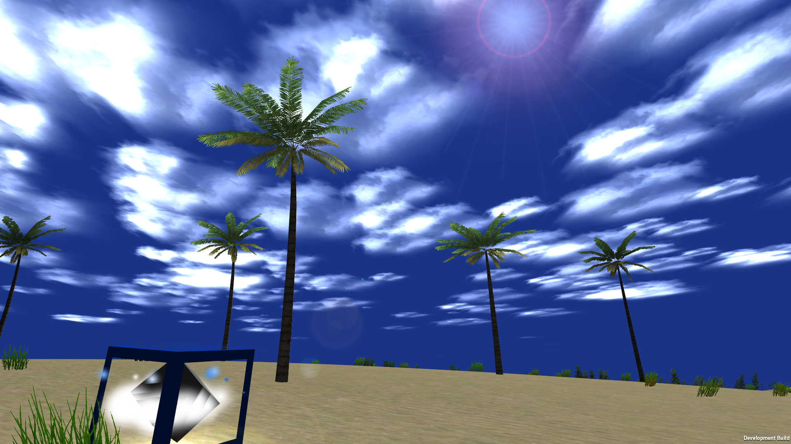

So the Build Cycle...
November 18, 2012
...Has progressed to Pre-Alpha 2. That's right. After only a month and 4 days, the sun rotates. And the sky changes colors. And the clouds move.

Pictured: basically everything in the game
My excuse about being a Junior in High School remains sound.
In all seriousness, this build cycle was a bit weird for me. First, when I started working on it again a few days ago, the game didn't start like it should. You had to pause the game and resume it for the controls to work. None of the code had changed.
Another weird problem I ran into was the sun. After it reached about 90 degrees into the sky it started to move backwards and seizure about the Y and Z axes. The strobe party was fun while it lasted, though.
The final problem was a math problem. As in an actual math problem. I had to write a trig equation to calculate on a scale of 0 to 1 how far into the afternoon color the sky should be.
f(X)=-0.5*cos((π/864)*X)+0.5
In case you were wondering
The moral of the story is that you should pay attention in school... And thank your math teachers... Or something...
... Or you could just go to the download page to get the latest release. That works too. There's even a Mac and 64-bit PC version now!
Phase 3 will be underway shortly. And by Phase 3, I mean Pre-Alpha 3. And by underway, I mean including actual water and death screens.